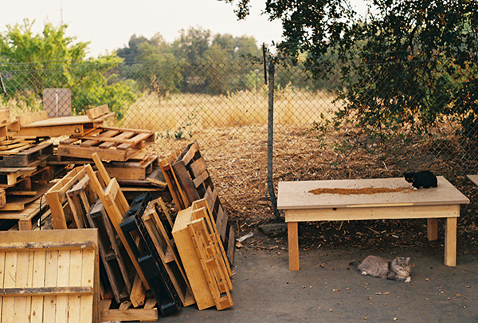

This image is interesting to me because of the narrative
possibilities it provides. To me, this shows the
personalities of the cats, and hints towards their roles
in the group of stray cats that inhabit the outside of
my office building. The black cat seems feisty and
alert, as it crouches and stares directly at the camera
with bright orange eyes. The gray tabby lies back in a
majestic manner, paying the camera no mind. If these
cats were in a fantasy book, it would seem that the
tabby is the leader of the pack, and the black cat is a
scout or a warrior.
I was assigned to review Louis Shek’s photos, and he
sent me several pictures of luxury sports cars. These
photos are interesting to me because of their
technical/mechanical aesthetics. The exterior of the
cars are sharp and direct but also constantly changing
with different indents in the body or complex mechanical
components. I think that these pictures provide lots of
possibility for zooming and focusing on specific parts
of each car.

Mine: Office CatsLouis Shek: Sports Car
lj 4
Every Picture - Reading, Research & Response
While searching for inspiration for my
Every Image
project, I found
The Shift
on the
Awwwards
website. The Shift is a design firm in Tokyo, and they
have a super cool image/cursor interaction on their list
of projects and clients. While scrolling through the
list, an image representative of the project title being
hovered over follows the cursor, and changes with a
snappy transition as the user hovers over a different
project. I found this interaction particularly
inspirational in the minimalism and space it afforded to
the list, while still maintaining an emphasis on images.
By placing images for the projects in the background
following the cursor, it enables the list of projects to
be centered in the middle of generous negative space
with a large font size, because it does not have to be
squeezed in next to fixed images of each project.
Despite this, no emphasis on images was lost, since they
were included in a creative, interactive, and
unobtrusive manner. The
Every Image
project will produce an image-heavy page, and I will be
inspired to include my typography in a thoughtful and
balanced manner that will not result in the images
overwhelming the type and vice-versa.
Best Practices for Modals / Overlays / Dialog Windows
Best Practices for Modals / Overlays / Dialog
Windows
by Naema Baskanderi was interesting because of it’s
focus on the design of something that most people find
annoying. Most users immediately dismiss modal windows
as an annoyance in order to return to the main page of
the website, so how would one go about designing one of
these windows to combat that effect? When designing a
modal window, the designer should include an immediately
accessible escape hatch in order to exit the window, as
well as a title providing the user with context as to
why the modal window is there. Already, these will make
the user feel as if they have control over the modal. In
my opinion, the most important choice in the integration
of a modal window into a webpage is to make it user
initiated. Even if a modal window is incredibly well
designed, if it is an unexpected popup the user will
likely dismiss it immediately. By triggering the modal
window on a button click or prompt from the user, the
user will be inclined to engage with that modal window
because it showed up by their own doing. Modal windows
are an excellent way to grab the user’s attention and
effectively collect user input, but it is imperative
that they are integrated in a way that does interrupt
user flow and the user’s freedom of choice on the
webpage.
Best Practices for Form Design by Salim Ansari
reinforced the importance of minimalism in basic
functions, clearly defined instructions, and positive
feedback towards the user. An example of minimalism in a
basic function is the display of password requirements
on a form. Many sites hide password requirements until
the user fails to fulfill them. Instead of adding this
additional feature to the password field, it would be
better to simply list the password requirements
immediately to avoid extra complication. This also
speaks to the value of positive feedback and respect for
the user’s time, in that it decreases the chance for
“failure” from the user. A proper form should only feel
positive and “understanding” to the user; communication
from the webpage should seem more friendly and less cold
and robotic. For example, an alert saying “Please enter
your name” would be more pleasant than one saying “You
did not enter your name,” and the labeling of a
non-required field as “optional” would be more pleasant
than red alerts on required fields. In my opinion,
github
does this very well. Whenever I go to my account
settings to update/change information, most of the input
fields have a message underneath explaining how to use
that field/providing helpful information and additional
resources.